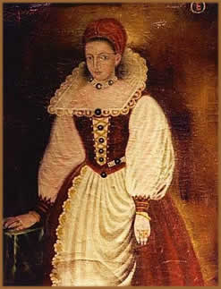

A Condessa Elizabeth Bathory (Erzsebet
Báthory, do original), foi uma das mulheres mais perversas
e sanguinárias que a humanidade já conheceu. Os
relatos sobre ela ultrapassam a fronteira da lenda e a rotulam
através dos tempos como A Condessa de Sangue.
 Nascida
em 1560, filha de pais de famílias aristocráticas
da Hungria, Elizabeth cresceu numa época em que as
forças turcas conquistaram a maior parte do território
Húngaro, sendo campo de batalhas entre Turquia e
Áustria. Vários autores consideram esse o
grande motivo de todo o seu sadismo, já que conviveu
com todo o tipo de atrocidades quando criança, vendo
inclusive suas irmãs sendo violentadas e mortas por
rebeldes em um ataque ao seu castelo. Ainda durante sua
infância, ficou sujeita à doenças repentinas
acompanhadas por uma intensa ira e comportamento incontrolável,
além de ataques epiléticos. Teve uma ótima
educação, inclusive sendo excepcional pela
sua inteligência. Falava fluentemente húngaro,
latim e alemão. Embora capaz de cometer todo tipo
de atrocidade, ela tinha pleno controle de suas faculdades
mentais.
Nascida
em 1560, filha de pais de famílias aristocráticas
da Hungria, Elizabeth cresceu numa época em que as
forças turcas conquistaram a maior parte do território
Húngaro, sendo campo de batalhas entre Turquia e
Áustria. Vários autores consideram esse o
grande motivo de todo o seu sadismo, já que conviveu
com todo o tipo de atrocidades quando criança, vendo
inclusive suas irmãs sendo violentadas e mortas por
rebeldes em um ataque ao seu castelo. Ainda durante sua
infância, ficou sujeita à doenças repentinas
acompanhadas por uma intensa ira e comportamento incontrolável,
além de ataques epiléticos. Teve uma ótima
educação, inclusive sendo excepcional pela
sua inteligência. Falava fluentemente húngaro,
latim e alemão. Embora capaz de cometer todo tipo
de atrocidade, ela tinha pleno controle de suas faculdades
mentais.
Aos 14 anos engravidou de um camponês, e
como estava noiva do Conde Ferenc Nadasdy, fugiu para não
complicar o casamento futuro; que ocorreu em maio de 1575. Seu
marido era um oficial do exército que, dentre os turcos,
ganhou fama de ser cruel. Nos raros momentos em que não
se encontrava em campanha de batalha, ensinava a Elizabeth algumas
torturas em seus criados indisciplinados, mas não tinha
conhecimentos da matança que acontecia na sua ausência
por ação de sua amada esposa.
Quando adulta, Elizabeth tornou-se uma das mais
belas aristocratas. Quem em sua presença se encontrava,
não podia imaginar que por trás daquela atraente
mulher, havia um mórbido prazer em ver o sofrimento alheio.
Num período em que o comportamento cruel e arbitrário
dos que mantinham o poder para com os criados era algo comum,
o nível de crueldade de Elizabeth era notório. Ela
não apenas punia os que infringiam seus regulamentos, como
também encontrava motivos para aplicar punições
e se deleitava na tortura e na morte de suas vítimas; muito
além do que seus contemporâneos poderiam aceitar.
Elizabeth enfiava agulhas embaixo das unhas de seus criados. Certa
vez, num acesso de raiva, chegou a abrir a mandíbula de
uma serva até que os cantos da boca se rasgassem. Ganhou
a fama de ser "vampira" por morder e dilacerar a carne
de suas criadas. Há relatos de que numa certa ocasião,
uma de suas criadas puxou seu cabelo acidentalmente aos escová-los.
Tomada por uma ira incontrolável, Bathory a espancou até
a morte. Dessa forma, ao espirrar o sangue em sua mão,
se encantou em vê-lo clarear sua pele depois de seco. Daí
vem a lenda de que a Condessa se banhava em sangue para permanecer
jovem eternamente.
Acompanhando a Condessa nestas ações
macabras, estavam um servo chamado apenas de Ficzko, Helena Jo,
a ama dos seus filhos, Dorothea Szentos (também chamada
de Dorka) e Katarina Beneczky, uma lavadeira que a Condessa acolheu
mais tarde na sua sanguinária carreira.
Nos primeiros dez anos, Elizabeth e Ferenc não
tiveram filhos pela constante ausência do Conde. Por volta
de 1585, Elizabeth deu à luz uma menina que chamou de Anna.
Nos nove anos seguintes, deu à luz a Ursula e Katherina.
Em 1598, nasceu o seu primeiro filho, Paul. A julgar pelas cartas
que escreveu aos parentes, Elizabeth era uma boa mãe e
esposa, o que não era de surpreender; visto que os nobres
costumavam tratar a sua família imediata de maneira muito
diferente dos criados mais baixos e classes de camponeses.
Um dos divertimentos que Elizabeth cultivava durante
a ausência do conde, era visitar a sua tia Klara Bathory.
Bissexual assumida e muito rica e poderosa, Klara tinha sempre
muitas raparigas disponíveis para ambas "brincarem".
Em 1604 seu marido morreu e ela se mudou para Viena.
Desse ponto em diante, conta a história que seus atos tornaram-se
cada vez mais pavorosos e depravados. Arranjou uma parceira para
suas atividades, uma misteriosa mulher de nome Anna Darvulia (suposta
amante), que lhe ensinou novas técnicas de torturas e se
tornou ativa nos sádicos banhos de sangue. Durante o inverno,
a Condessa jogava suas criadas na neve e as banhava com água
fria, congelando-as até a morte. Na versão da tortura
para o verão, deixava a vítima amarrada banhada
em mel, para os insetos devorarem-na viva. Marcava as criadas
mais indisciplinadas com ferro quente no rosto ou em lugares sensíveis,
e chegou a incendiar os pêlos pubianos de algumas delas.
Em seu porão, mandou fazer uma jaula onde a vítima
fosse torturada pouco a pouco, erguendo-a de encontro a estacas
afiadas. Gostava dos gritos de desespero e sentia mais prazer
quando o sangue banhava todo seu rosto e roupas, tendo que ir
limpar-se para continuar o ato.
Quando a saúde de Darvulia piorou em 1609
e não mais continuou como cúmplice, Elizabeth começou
a cometer muitos deslizes. Deixava corpos aos arredores de sua
moradia, chamando atenção dos moradores e autoridades.
Com sua fama, nenhuma criada queria lhe servir e ela não
mais limitou seus ataques às suas servas, chegando a matar
uma jovem moça da nobreza e encobrir o fato alegando suicídio.
As
investigações sobre os assassinatos cometidos pela
Condessa começaram em 1610. Foi uma excelente oportunidade
para a Coroa que, há algum tempo, tinha a intenção
de confiscar as terras por motivos de dívida de seu finado
marido. Assim, em dezembro de 1610 foi presa e julgada. Em janeiro
do ano seguinte foi apresentada como prova, anotações
escritas por Elizabeth, onde contava com aproximadamente 650 nomes
de vítimas mortas pela acusada. Seus cúmplices foram
condenados à morte e a Condessa de Bathory à prisão
perpétua. Foi presa num aposento em seu próprio
castelo, do qual não havia portas nem janelas, só
uma pequena abertura para passagem de ar e comida.
Ficou presa até sua morte em 21 de agosto
de 1614. Foi sepultada nas terras de Bathory, em Ecsed. O seu
corpo deveria ter sido enterrado na igreja da cidade de Csejthe,
mas os habitantes acharam repugnante a idéia de ter a "Infame
Senhora" sepultada na cidade.
Até hoje, o nome Erzsebet Báthory
é sinônimo de beleza e maldade para os povos de toda
a Europa.
Para ver as ruínas do Castelo da Condessa
de Bathory, clique
aqui.
Por
Spectrum